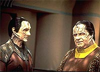
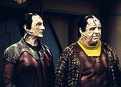

MANCHETE
DO EPISDIO
Melhor
segmento da temporada alinha
Odo e Garak em trama espetacular
Episdio
anterior | Prximo
episdio
Sinopse:
Data Estelar:
desconhecida.
Garak e Bashir esto almoando a
falando sobre "Julius Caesar", de Shakespeare. O
Cardassiano falha em ver qualquer relevncia na obra, que conta a
histria de um brilhante estrategista que no consegue enxergar
o traidor bem debaixo do prprio nariz. O doutor retruca dizendo
que este justamente o mago desta tragdia do
"Bardo" Ingls. Bashir se levanta apressado, pois Garak
se atrasou para o compromisso e o doutor tem trabalho a fazer. Os
dois deixam o replimat, Bashir se encontra com Kira no caminho e
Garak continua rumo a sua loja. Pouco depois a loja de Garak
explode, Bashir corre em socorro. O Cardassiano se salva, mas a
sua loja fica completamente destruda.
 A
investigao -- de Sisko, O'Brien e Odo -- descobre evidncia
de que um microexplosivo foi responsvel pela ruptura de um condute
de fora atrs da loja e causou a sua destruio. Houve uma
tentativa de assassinato ao "alfaiate". Na enfermaria
Sisko e Odo no conseguem tirar nenhuma informao de Garak
(descaradamente evasivo) e o comandante (j perdendo a pacincia)
o deixa sob a guarda de um destacamento de segurana e parte
junto com o comissrio, que promete continuar a investigao.
Bashir conta ento a fbula do "menino pastor de
ovelhas" sobre a falta de credibilidade de uma pessoa causada
por suas constantes mentiras. Garak rejeita que a fbula de fato
queira dizer isto. "Nunca diga uma mentira duas vezes!"
Seria uma interpretao mais apropriada da histria de Esopo,
segundo ele.
A
investigao -- de Sisko, O'Brien e Odo -- descobre evidncia
de que um microexplosivo foi responsvel pela ruptura de um condute
de fora atrs da loja e causou a sua destruio. Houve uma
tentativa de assassinato ao "alfaiate". Na enfermaria
Sisko e Odo no conseguem tirar nenhuma informao de Garak
(descaradamente evasivo) e o comandante (j perdendo a pacincia)
o deixa sob a guarda de um destacamento de segurana e parte
junto com o comissrio, que promete continuar a investigao.
Bashir conta ento a fbula do "menino pastor de
ovelhas" sobre a falta de credibilidade de uma pessoa causada
por suas constantes mentiras. Garak rejeita que a fbula de fato
queira dizer isto. "Nunca diga uma mentira duas vezes!"
Seria uma interpretao mais apropriada da histria de Esopo,
segundo ele.
Um pouco mais tarde, Garak chega ao escritrio de Odo junto com
os oficiais de segurana. O comissrio quer que ele olhe as
listas de entradas e sadas mais recentes em DS9 para ver se ele
descobre algum nome que possa estar envolvido no atentado. Garak no
acha nada. O'Brien chega com a informao que aponta para a
utilizao de um sensor feromnico que se ativa na presena de
uma espcie especfica. Eles so bastante usados por assassinos
Flaxianos. E um Flaxiano chegou estao nesta manh.
O tal Flaxiano, de nome Retaya, um mercador de fragrncias.
Odo faz perguntas sobre os assuntos dele na estao e do seu libi
para o atentado contra Garak. O comissrio tambm vai misturando
fragrncias, "consultando" o mercador sobre um
"presente para uma amiga". Retaya se ope a uma mistura
especfica sem explicar o porqu. Odo diz que tal mistura produz
um gs que causa ataques cardacos se inalado. O Flaxiano nega
ter tal conhecimento. Odo no tem evidncias para ret-lo e
pede que O'Brien coloque um rastreador na nave do mercador para
poder segui-lo. Odo embarca em um explorador onde Garak j estava
esperando com as malas prontas. Depois de uma discusso inicial,
Odo acaba concordando em levar Garak com ele. Pouco depois a nave
de Retaya destruda, logo que tenta entrar em dobra.
 Examinando
as evidncias obtidas por O'Brien e Dax, Odo conjura a teoria de
que os Romulanos contrataram Retaya para matar Garak e que o
mataram aps ele falhar em sua misso. Garak diz no ter a
menor idia do porqu de os Romulanos estarem envolvidos. Odo
agora acredita nele, mas no consegue tirar nada a mais do
Cardassiano, que sugere que o comissrio pergunte aos prprios
Romulanos. Para surpresa de Sisko, uma oficial da Tal Shiar
confirma que a agncia mandou matar Retaya -- ele era
alegadamente um criminoso procurado por crimes contra o Imprio
Romulano. Sisko e Odo tentam obter mais informao, mas a
Romulana nega qualquer fato adicional. Os dois no acreditam nas
explicaes dela e continuam na estaca zero tanto sobre Retaya
quanto sobre os Romulanos.
Examinando
as evidncias obtidas por O'Brien e Dax, Odo conjura a teoria de
que os Romulanos contrataram Retaya para matar Garak e que o
mataram aps ele falhar em sua misso. Garak diz no ter a
menor idia do porqu de os Romulanos estarem envolvidos. Odo
agora acredita nele, mas no consegue tirar nada a mais do
Cardassiano, que sugere que o comissrio pergunte aos prprios
Romulanos. Para surpresa de Sisko, uma oficial da Tal Shiar
confirma que a agncia mandou matar Retaya -- ele era
alegadamente um criminoso procurado por crimes contra o Imprio
Romulano. Sisko e Odo tentam obter mais informao, mas a
Romulana nega qualquer fato adicional. Os dois no acreditam nas
explicaes dela e continuam na estaca zero tanto sobre Retaya
quanto sobre os Romulanos.
Odo diz a Sisko que ainda possui certos contatos em Cardssia e
sem querer explicar muito pede o uso de um explorador. Sisko
concorda. No dia seguinte, em uma caverna escura em algum corpo
celeste deserto em algum lugar no espao Cardassiano, Odo se
encontra com um informante Cardassiano, que se mantm nas sombras
e diz que fez uma operao de mudana facial. O Cardassiano
cumprimenta Odo por ter seguido as pistas at os Romulanos, mas
diz que ele s investigou at agora a ponta do iceberg de um
problema muito maior. Atividade de naves Romulanas camufladas tem
sido seguidamente reportada na fronteira Cardassiana. Ele joga
para Odo um padd com os nomes de outros cinco ex-operativos da
Ordem que foram mortos no dia anterior, todos por "causas
naturais", e sugere que o comissrio o mostre para Garak.
Que aparentemente foi o nico sortudo at agora.
De volta estao, Garak fica radiante por saber que todos
aqueles Cardassianos esto mortos, mas quando continua negando
que tambm era um ex-agente da Ordem, Odo perde a pacincia e
diz que Garak explodiu a prpria loja. O Cardassiano fica sem
palavras. Odo diz que Retaya fora contratado para mat-lo
(provavelmente pelos Romulanos e utilizando veneno) e que quando
Garak percebeu a sua presena na estao temeu pela prpria
vida e explodiu a alfaiataria para que Odo iniciasse a investigao.
Ele no poderia pedir diretamente: ou no seria levado a srio
ou se veria obrigado a revelar seus segredos pessoais. Garak se v
em uma posio em que comea a cooperar.
Garak diz que os cinco mortos e ele foram um dia os homens de
confiana de Enabran Tain, ex-diretor da Ordem Obisidiana. Ele
nem sabe se o seu antigo chefe est vivo em vista das circunstncias,
muito menos o porqu de os Romulanos estarem fazendo isso tudo.
Garak usa ento o sistema de comunicaes de Odo para contatar
a residncia de Tain, atravs de uma conexo segura. Uma mulher
de nome Mila, governanta e confidente de Tain, atende. fcil
reconhecer que existe uma conexo muito profunda entre estes dois
Cardassianos. Mila pede que Garak ajude Tain, que est
desaparecido desde o dia anterior. Garak promete fazer o possvel.
Bashir se despede de Garak e o Cardassiano parte com Odo (no dia
seguinte) para o sistema Unefra, perto da Fronteira Cardassiana,
onde Tain tem uma casa secreta para emergncias.
 Durante
a viagem, Odo tenta descobrir mais sobre a relao de Garak com
Mila e principalmente com Tain. Ele chega muito perto quando
conjectura com propriedade que Tain foi o mentor de Garak e que
foi o velho Cardassiano que foi responsvel pelo exlio de
Garak. E que apesar disto o "alfaiate" estaria disposto
a arriscar a prpria vida por seu antigo superior, mostrando uma
grande conexo entre os dois. Garak diz que presume que Odo aja
simplesmente sob um cdigo pessoal de justia, sem envolver
sentimento algum e que ele acha "interessante" que ele
associe a ele sentimentos e motivaes que o comissrio
desconhece em primeira mo. Garak pergunta se existe algum em
todo o universo que Odo considera mais do que um simples
"quebra-cabea a ser montado". Odo diz que se existisse
tal pessoa, ele nunca diria a Garak. E Garak diz que ele faz muito
bem em no faz-lo.
Durante
a viagem, Odo tenta descobrir mais sobre a relao de Garak com
Mila e principalmente com Tain. Ele chega muito perto quando
conjectura com propriedade que Tain foi o mentor de Garak e que
foi o velho Cardassiano que foi responsvel pelo exlio de
Garak. E que apesar disto o "alfaiate" estaria disposto
a arriscar a prpria vida por seu antigo superior, mostrando uma
grande conexo entre os dois. Garak diz que presume que Odo aja
simplesmente sob um cdigo pessoal de justia, sem envolver
sentimento algum e que ele acha "interessante" que ele
associe a ele sentimentos e motivaes que o comissrio
desconhece em primeira mo. Garak pergunta se existe algum em
todo o universo que Odo considera mais do que um simples
"quebra-cabea a ser montado". Odo diz que se existisse
tal pessoa, ele nunca diria a Garak. E Garak diz que ele faz muito
bem em no faz-lo.
Ao chegar ao sistema Unefra, eles so capturados por uma Ave de
Guerra Romulana, que se descamufla em pleno espao Cardassiano.
Eles so levados a uma espcie de escritrio em que eles
encontram, para total surpresa, o prprio Tain, dizendo que a
chegada de Garak poupou o seu esforo de mandar outra pessoa para
mat-lo. Aps o choque inicial, Tain explica que ele est no
comando de uma frota combinada da Tal Shiar Romulana e da Ordem
Obsidiana Cardassiana (construda por meses no sistema Orias),
rumando para o quadrante Gama com o objetivo de destruir o planeta
natal dos Fundadores (informao que a Frota Estelar partilhou
com os Romulanos e que os Romulanos partilharam com ele), com o
objetivo de levar o Dominion ao colapso.
Odo se sente desconfortvel com o prospecto do genocdio de sua
raa, apesar de ter dado as costas para ela. Tain explica tambm
que tencionava matar todos os seus mais prximos colaboradores do
passado, pois ele tenciona voltar para sua antiga posio aps
a concluso da atual misso. Ele no podia deixar ningum vivo
com informaes que pudessem compromet-lo. O antigo mentor de
Garak tambm fica surpreso ao saber que fora o prprio quem
explodiu a alfaiataria.
Garak diz que veio por que achava genuinamente que Tain corria
perigo de vida e que nunca o traiu de verdade em seu corao.
Para surpresa geral, Tain acredita e oferece uma escolha a Garak.
Ele pode partir com o explorador ou ficar para servir Cardssia
uma vez mais, sendo o passado esquecido. Odo ficaria na nave de
qualquer forma. Apesar dos protestos do comissrio de que Tain no
confivel, Garak diz que nada importa e que ele est de volta
ao lado do seu mentor. E a frota continua rumo fenda espacial.
Comentrios:
Este episdio um vencedor to completo e absoluto que fica at
difcil destacar os seus pontos principais. Tudo impressiona: o
fenomenal uso de continuidade, a trama (em complexidade, densidade
e sofisticao), os dilogos, as caracterizaes dos
personagens (muito mais complexas do que usualmente se encontra em
Jornada), a direo, as atuaes etc. Literalmente
tudo! Mas ainda assim ele maior que a soma de suas partes, pois
todos esses elementos se mesclam de uma maneira extremamente
coerente e mesmo impiedosamente lgica. Mais detalhes, sem
precisar explodir o prprio lugar de trabalho no processo, nas
linhas abaixo.

Este
episdio um exemplo de como se utilizar continuidade em um
drama serial. Temas recorrentes e acontecimentos passados da srie
so reexaminados e unidos em uma frente lgica e coesa que eleva
a srie a um novo patamar. Tal processo oferece novos possveis
desdobramentos, que posteriormente levaro a outros novos
caminhos na srie e assim sucessivamente. (Em outras palavras,
tudo que foi feito em "Life
Support", s que ao contrrio.)
De fato tivemos inmeros aspectos de continuidade tratados aqui.
H referncias a "The
Wire" (onde o passado de Garak comea a ganhar algum
foco com a introduo de Tain e da Ordem Obsidiana -- incluindo
a a analogia entre a Ordem e a Tal-Shiar) e "The
Search" (que vira a vida de Odo do avesso com a
descoberta dos Fundadores como o seu povo -- alm de outras inmeras
informaes sobre o Dominion) em primeiro lugar, mas no pra
por a.
Vejamos: "Second
Skin" (onde Ghemor avisa a Kira sobre o quanto Garak
pode ser perigoso e em uma nota de retrocontinuidade o episdio
desta semana explica as costas quentes de Garak, atravs do seu
mentor: ele est exilado, mas no pode ser tocado), "Defiant"
(a frota da Ordem Obsidiana sendo construda no sistema Orias), "Destiny"
(um ponto claramente menor, mas mostra que a Ordem no queria
nenhum indcio de invaso ou misso ao quadrante Gama de
qualquer parte envolvida -- tambm denota a sua preocupao com
a ameaa do Dominion e que Cardssia estava perdendo tempo e se
complicando politicamente ao intensificar suas relaes com a
Federao e com Bajor), "Visionary"
(mostrando a parania dos Romulanos com relao ao Dominion) e
mesmo "Necessary
Evil" (pois voltamos a ter nesta semana mais um
vislumbre do passado sombrio de Odo, com direito at a uma meno
do infame "truque do pescoo Cardassiano").
Tais temas so incorporados de uma forma transparente e sem
chamar a ateno para si. Alm disto o roteiro do episdio
aparenta ser to multifacetado quanto o prprio Garak, trazendo
reviravoltas altamente inspiradas que parecem sair de uma linha de
montagem sem fim. Normalmente os "fins de ato" (em episdios
de sries de TV em geral) sempre trazem alguma espcie de
"gancho" para fazer o espectador no mudar de canal no
intervalo, algo que muitas vezes parece mecnico e artificial,
uma restrio de formato como usar uma determinada fonte ou
tabulao no manuscrito de um roteiro. Nesta semana cada
"fim de ato" teve vida e foi um evento em si prprio.
A maior surpresa da trama, de que foi o prprio Garak que
explodiu a prpria loja e a explicao do "porqu"
embutida na fbula que Bashir conta a Garak muito antes (e, em
uma primeira assistida, aparentemente de forma totalmente
dissociada da investigao em curso naquele momento) de tal
revelao brilhante.
Em termos de complexidade interna, tal roteiro encara pelo menos
de igual para igual qualquer outro de Jornada, mas se
formos levar em conta o seu tratamento de material passado, ele
ocupa uma classe por si s. Este roteiro o mais ambicioso de Jornada
at aquele momento (em que o episdio fora exibido
originalmente) e consegue concretizar tal ambio de uma forma
admirvel.
No precisamos ir muito longe para exemplificar a qualidade do
roteiro. Basta tomarmos a primeira cena. Bashir e Garak almoando
e falando sobre literatura, algo absolutamente rotineiro. Garak se
atrasou para o almoo (estava preparando o explosivo e deixando
as pistas para Odo seguir, aps ver o Flaxiano na estao),
estava ainda mais falastro do que de costume e no tocou na
comida (estava claramente nervoso com toda a situao) e partiu
junto com Bashir (para garantir um perfeito libi). Visto uma
primeira vez, um encontro divertido. Visto uma segunda vez, um
brilhante "setup".
Por falar em "setup", tal cena inicial com a discusso
a respeito de "Julius Caesar" (a princpio completa
rotina) ter o seu "payoff" na semana que vem.
Shakespeare s foi usado de forma to efetiva e to sofisticada
anteriormente em Jornada em "The Defector",
da terceira temporada de A Nova Gerao. No coincidncia
que Ronald D. Moore, que escreveu tal episdio de Picard e cia.,
tambm esteve envolvido (de forma no-creditada) no segmento de DS9
desta semana e escreveu a sua concluso.
(Na realidade, a concluso "The Die Is Cast"
provavelmente utiliza o velho "Bardo" -- atravs de um
eco -- de uma forma ainda mais forte e muito mais pessoal do que
em "The Defector".)
Com cenas to longas como as que temos aqui, bons dilogos so
necessrios para segurar as cenas e para produzir um fechamento
em cada uma delas. Ns tivemos esta semana provavelmente o melhor
episdio em termos de dilogos de toda a histria do franchise.
A variedade, sofisticao e riqueza dos dilogos...
desconcertante. Parece mais uma antologia.

A
formao da dupla Garak e Odo faz tanto sentido dramtico que
fica a pergunta de por que ela demorou tanto a acontecer. Eles so
os dois nicos de suas respectivas espcies vivendo em DS9.
Ambos so olhados com desprezo pelos moradores da estao
(Garak mais claramente do que Odo neste ponto -- apesar de "A
Man Alone" apontar que certas pessoas tambm mantm
o seu ressentimento com relao a Odo). Sem falar que eventos
futuros na srie vo trazer ainda mais dio e desconfiana
para cima deles. Ambos pessoas extremamente privadas. Garak, um
agente de elite do maior servio de inteligncia do quadrante (e
o herdeiro natural do comando de tal agncia). Odo, o melhor
chefe de segurana do quadrante (e o filho prdigo do mais
poderoso imprio intergalctico da histria do franchise). E
ambos vivem no exlio. As coincidncias so tantas que chega a
assustar.
Outro fato importante que Garak e Odo no so exatamente
escoteiros. Garak, com certeza, fez coisas terrveis no seu
passado (e nunca olhou para trs, porque no poderia faz-lo se
quisesse continuar vivendo) e um homem prtico sob todos os
aspectos. Odo foi responsvel por trazer ordem e justia a uma
escravatura e condenou direta ou indiretamente muitos inocentes
(em um outro possvel estado de direito) morte. Quando tal
passado de fato respeitado, o material associado a esses
personagens intenso como muito pouca coisa produzida em Jornada.
Este foi o caso aqui.
Posto isto, no existe muito que falar sobre as cenas dos dois
juntos. Eles "quebram tudo" seguidamente e sem descanso.
um verdadeiro massacre. A viagem dos dois para o sistema Unefra
em que trazido pela primeira vez tona o tema da solido
compartilhada dos dois um estupendo material. Reparem que o
Dominion s referido no ltimo ato do episdio. E quando o
futuro genocdio dos Fundadores anunciado, Odo est l para
produzir a ressonncia emocional adequada. Porque ele era o
responsvel natural pela investigao em primeiro lugar. Esta
simples noo de coerncia permeia todo o segmento.
Tain exibe aqui a mesma dualidade com relao a Garak que em "The
Wire", mandando matar o ex-pupilo e pouco tempo
depois aceitando esquecer a traio dele e o convidando para a
sua misso. Mila definitivamente mais um elemento importante
na vida de Garak, mas cabe salientar que no aprendemos nada
sobre Garak que j no fosse sabido ou que j no fosse uma
suposio confivel. O que de forma alguma um problema --
trazer toda a caracterizao de Garak vida atravs de
subtexto extremamente sofisticado. Tornar sentimentos
(notadamente entre Garak, Tain e Mila) to claros desta maneira
tarefa para poucos.
A direo de Brooks absolutamente matadora, uma das melhores
de toda a srie. No somente por arrancar atuaes memorveis
de todos os envolvidos, mas tambm por pontuar cada recorrncia
do roteiro, tornando a verso filmada ainda mais coesa do que a
escrita (que j era estupenda). A cena em que Odo encontra o seu
informante uma das mais bem construdas e originais de toda a
histria do franchise. O ato final, que contm apenas uma nica
cena, outra prola em que todos as "feras de teatro"
envolvidas "quebram tudo" em uma demonstrao brutal
de talento. A imagem final (de Tain e Garak se cumprimentando com
Odo ao fundo) antolgica. Outro tributo ao diretor (e aos
atores envolvidos) vai pela cena em que Garak contata Mila.
Normalmente tais cenas so muito frias, uma vez que os atores
normalmente filmam separados e muitas vezes nem se encontram
durante as filmagens. A aura, traduzida em tal seqncia, de
ternura e mgoa que circunda os dois Cardassianos to espessa
que d para enfiar uma colher. Brilhante!
claro que nenhum ator regular fez nada de errado aqui, mas o
destaque vai obviamente para o magistral Ren Auberjonois. Falar
da sua incrvel tcnica com mscaras essencialmente lugar
comum. Mas quem consegue fazer tanto emoo atravessar uma mscara
to rgida e disforme com a de Odo merece todo o elogio. A forma
como ele alterna caracterizaes, quando Odo interroga Retaya,
mgica. Ele tem total controle dos dilogos, da voz e da
sensibilidade do comissrio.
O arsenal de inflexes e entonaes de Robinson parece
ilimitado. Basta contrastar as cenas em que Garak mente
descaradamente com um semblante completamente opaco e as cenas do
personagem com Mila e finalmente no final com Tain. O domnio de
Robinson sobre o personagem incrvel e os olhos do ator tm
uma vida prpria. Sua face quando Odo o encurrala digna de uma
placa na Paramount. Dooley projeta uma incrvel aura de poder
apesar do seu fsico no ajudar em nada. LaCamara foi genial, s
faltava escrever culpado na sua testa, mas ainda assim ele no
perdeu a pose em momento algum. O vozeiro de Ruskin foi de
arrepiar e McCarthy foi absolutamente brilhante. Carson foi talvez
o nico elo fraco entre os atores convidados, mas ainda assim ela
no comprometeu.
Garak havia entrado em territrio Cardassiano anteriormente em "Second
Skin", porque foi chantageado por Sisko. No por
vontade prpria.
Infelizmente o informante de Odo no seria sequer mencionado no
curso da srie. Ainda que gul Russol (referido no incio de "Treachery,
Faith and the Great River", da stima temporada) possa
ou no ser o mesmo Cardassiano.
A informao dos sensores da Defiant no chegou, com certeza,
nas mos do Comando Central, aps "Defiant".
E se chegou, chegou adulterada. Sem problemas quanto a isso.
"Improbable Cause" um clssico de DS9
e o melhor episdio desta terceira temporada. Como os dois
"cabeas de temporada" antes dele ("Duet"
e "Necessary
Evil"), ele traduz perfeitamente a quinta-essncia
de DS9 enquanto srie: complexas caracterizaes de
personagens, que so arrastados por uma torrente de eventos sobre
a qual eles no possuem controle algum. A sofisticao, o
escopo e mesmo a coragem do segmento so dignas de nota e a execuo
de tais idias simplesmente de cair o queixo. Todos os
envolvidos merecem os maiores elogios, mas o trabalho de quatro
nomes ganha uma meno especial: as inesquecveis atuaes do
trio Auberjonois, Robinson e Dooley (todos os trs indicados ao
prmio Emmy em suas vidas de ator) e a antolgica direo de
Brooks. O episdio verdadeiramente " prova de
balas", uma obra-prima!
Citaes
Garak - "I'm afraid
your pants won't be ready tomorrow after all."
("Temo que suas calas no estaro prontas amanh
afinal.")
Garak - "The truth is usually just an excuse for lack of
imagination."
("A verdade normalmente apenas uma desculpa por falta de
imaginao.")
Odo - "Considering those uniforms of theirs [Romulans],
you'd think they'd appreciate a decent tailor."
("Considerando os uniformes deles [Romulanos], voc poderia
pensar que eles gostariam de um alfaiate decente.")
Tain - "Always burn your bridges behind you; you never
know who might be trying to follow."
("Sempre destrua as pontes atrs de voc; voc nunca sabe
quem pode estar tentando te seguir.")
Tain - "I can't forgive what you did, but I can try to
forget -- put it aside as if it never happened. So, do you want to
go back to your shop and hem pants, or shall we pick up where we
left off?"
("No posso perdo-lo pelo que fez, mas posso tentar
esquecer -- colocar de lado como se nunca tivesse acontecido. Ento,
voc quer voltar sua loja e ajustar calas, ou devemos
continuar de onde paramos?")
Odo - "Garak, this is the man who sent you into exile.
This is the man who two days ago tried to have you killed."
("Garak, esse o homem que o mandou para o exlio. Esse
o homem que h dois dias tentou mat-lo.")
Garak - "Yes, he is. But it doesn't matter. I'm
back."
("Sim, ele . Mas no importa. Eu estou de volta.")
Trivia:
 A histria inicial do episdio brotou da mente do editor de episdios
Robert Lederman. Enquanto montava "Second
Skin", ele observou Garak matando Entek e imaginou
que a Ordem no poderia deixar barato tal ato. No poderia
simplesmente deix-lo no exlio em paz. Ele (e o seu parceiro de
escrita David R. Long) bolaram uma histria em que, sentindo que
sofreria um atentado, Garak explode a sua prpria loja. A idia
da dupla no envolvia o personagem de Enabran Tain. Ren
Echevarria, que escreveu o roteiro, logo perguntou a toda a equipe
da srie: "Por que Garak faria uma coisa assim?"
Durante tal discusso, a construo de naves da Ordem Obsidiana
no sistema Orias (de "Defiant")
foi tambm trazida mesa.
A histria inicial do episdio brotou da mente do editor de episdios
Robert Lederman. Enquanto montava "Second
Skin", ele observou Garak matando Entek e imaginou
que a Ordem no poderia deixar barato tal ato. No poderia
simplesmente deix-lo no exlio em paz. Ele (e o seu parceiro de
escrita David R. Long) bolaram uma histria em que, sentindo que
sofreria um atentado, Garak explode a sua prpria loja. A idia
da dupla no envolvia o personagem de Enabran Tain. Ren
Echevarria, que escreveu o roteiro, logo perguntou a toda a equipe
da srie: "Por que Garak faria uma coisa assim?"
Durante tal discusso, a construo de naves da Ordem Obsidiana
no sistema Orias (de "Defiant")
foi tambm trazida mesa.
Uma nova histria foi concebida e Echevarria escreveu uma verso
do roteiro em que no comeo do "Ato 4", Garak entregava
a Bashir uma barra isolinear, dizendo: "valiosas informaes
- para se o pior vier a acontecer comigo". Ao final do
"Ato 5", Garak ento fazia que Tain deixasse que Odo e
ele partissem graas a este ardil e o velho Cardassiano assim o
fazia. Ningum da equipe ficou satisfeito com a histria.
A que Michael Piller, em um dos seus ltimos atos oficiais como
manda-chuva da srie, disse para manter Odo na Ave de Guerra
Romulana e partir para combater o Dominion no quadrante Gama.
"Faam uma segunda parte", disse o produtor. Alm dos
problemas em modificar a histria para ir para uma segunda parte,
"Through
The Looking Glass" estava para entrar em produo,
logo aps "Improbable Cause" e no havia como
mudar. Da "The Die is Cast" teve de ser
produzido depois. Felizmente a agenda de Paul Dooley permitiu que
ele voltasse quase trs semanas depois para fechar o episdio
agora duplo.
Da Echevarria e Moore rescreveram a primeira parte e Moore
partiu para escrever a segunda. Agora a histria da tal
"barra isolinear" virou uma brincadeira que Garak prega
em Bashir. Eles tambm tornaram implcito o motivo para Garak
explodir a prpria alfaiataria quando Bashir conta a fbula
sobre o menino pastor de ovelhas. Os novos uniformes da Tal Shiar
foram fruto de um esforo de Moore, que simplesmente odiava os
uniformes Romulanos originais feitos para a primeira temporada de A
Nova Gerao.
Gary Monak usou a experincia adquirida para explodir a escola de
Keiko em "In
the Hands of the Prophets" para explodir a alfataria
de Garak esta semana. Jonathan West no pde usar chamas reais
para iluminar as cenas de Garak em meio aos escombros da sua loja,
mas utilizou uma iluminao especial para simular tal efeito.
Mila (Julianna McCarthy) voltaria a aparecer nos episdios finais
da srie: "The Dogs of War" e "What You
Leave Behind". Apesar de nunca ter sido confirmado em
tela, tudo indica que Mila de fato a me de Garak.
Este episdio duplo to importante para a saga de DS9
quanto o episdio "The Coming Of Shadows" o para a
saga de "Babylon 5".
Episdio indicado ao Prmio Emmy de melhor penteado.
Ficha
tcnica:
Histria de Robert
Lederman & David R. Long
Roteiro de Ren Echevarria
Direo de Avery Brooks
Exibido em 24/04/1995
Produo: 065
Elenco:
Avery Brooks como
Benjamin Lafayette Sisko
Ren Auberjonois como Odo
Nana Visitor como Kira Nerys
Colm Meaney como Miles Edward O'Brien
Siddig El Fadil como Julian Subatoi Bashir
Armin Shimerman como Quark
Terry Farrell como Jadzia Dax
Cirroc Lofton como Jake Sisko
Elenco convidado:
Andrew Robinson
como Elim Garak
Carlos LaCamara como Retaya
Joseph Ruskin como o Informante Cardassiano
Darwyn Carson uma Romulana
Julianna McCarthy como Mila
Paul Dooley como Enabran Tain